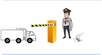
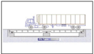

What does the digital supply chain mean for your company? More integration, better visibility, lesser human errors and higher accuracy. Inbound logistics is a vital part of the supply chain which involves procuring material from various vendors. Implementation of digital improvement strategies in Inbound logistics is critical to the success of modern business landscape.
Inbound logistics process can be simplified by integration sensors, Bar code scanners or QR Code scanners with ERP systems.
As an example, consider the process of Gate entry in a factory – Gate entry involves the security guard at the gate making the entry of the truck in the factory. This is to be followed by the weighing of the goods on a weigh bridge.
Below is an example of using Simplified inbound logisticsin Gate entry and Weighing process:
Gate Entry

At Gate Entry, the Security guard, will use a Bar code Scanner to scan goods in the incomming truck.
The bar code scanner will post this gate entry in the SAP system.
Also Bar code printer will print a bar code and it will be stuck on the incoming invoice
Weighing Process

Sensor on the weighing machine triggers a single when the truck arrives in the correct position.
Weight will get verified and recorded in the SAP system
Good Receipt(MIGO)
A Bar code scanner will be used to scan the Gate entry sticker and Goods Receipt will be triggered in SAP system.
Quality Check
A Bar code scanner will be used to scan the gate entry sticker and Quality Check will be performed in SAP system
Thus we see that by using digital tools and methods, the process has been simplified and has also resulted in significant saving of man hours.Other processes which can be automated are Incoming POs, MIGO etc.
Benefits of Simplified Inbound
Cost reduction
Accurate tracking of goods
Precision
Reduced turnaround time
Reduced cost
Reduced man hours
Higher efficiency
Reduction in lead time
Lean Inventory
Industry Coverage
Different industries have different processes for their outbound logistics and therefore will have different needs. DigiZura will offer services for Rapid Outbound across various industries, few of which are mentioned below.